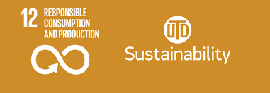

s
Home | SDG 12 | SDG Challenges | SDG Actions | Tech for SDG | My SDG Impart | About me | Coder Series |

Welcome to my goal, SDG 12
This goal is about the diffed is dying. This is where human activities are destroying life. This also is causing us to make more food which we do end up wasting and losing. we need to ensure sustainable consumption patterns
Welcome to my goal, SDG 12. This is presented as it gives us a chance to stop Global Warming. This needs to be done because the world is in great danger - this means our world needs to start stopping wasting food and they need to start saving food for people to eat. people also need to ensure that they make sustainable consumption production patterns.we just need to stop wasting food and make some sustainable patterns.
The thing is 17% of total food is wasted at the consumer level. but also 13.3% of the world's food is lost after harvesting and before reaching retail markets. so that's why it is good to stop wasting food and make sustainable patterns.